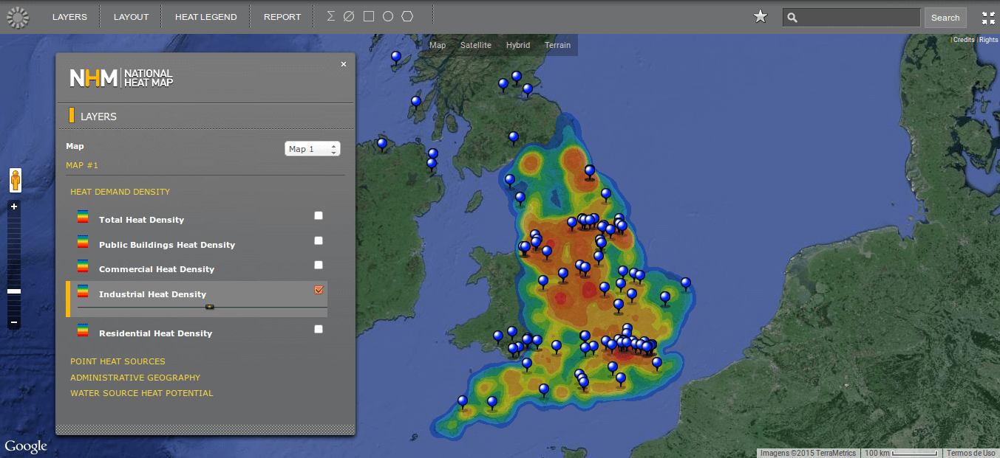

O que é?
Google Maps API permite aos desenvolvedores incluírem a ferramenta Google Maps em suas páginas e aplicativos.
Há várias formas de fazer isso:
- Google Maps JavaScript API
- Google Static Maps API
- Google Maps Embed API
Suporte à várias plataformas:
- iOS
- Web
- Android
Há ainda a versão empresarial: Google Maps API for Work
Quanto custa o Google Maps API?
Nada!
A maior parte das aplicações e websites podem user o Google Maps API de forma gratuita porém, se você fizer muitos (mas muitos mesmo!) acessos por dia poderá ser necessário pagar pelo uso extra.
Limites:
- 25.000 map loads por mais de 90 dias consecutivos.
- O que acontecerá neste caso?
- Site acessível somente por clientes pagantes
- Site acessível somente de dentro de sua empersa ou intranet
- Aplicações desktop "não acessíveis publicamente"
Sobre a API_KEY
O que é?
- Um código que identifica sua aplicação ou site para os servidores do Google Maps API e é obtida através do Google Developers Console.
Posso usar o Google Maps API sem uma API_KEY?
- Sim, como nos exemplos que veremos a seguir...
Atenção: quando for usar um host com hospedagem compartilhada ou subdomínios é importante que você utiliza uma API_KEY.
Muito além de mapas!
Web Services
- Directions API
- Distance Matrix API
- Elevation API
- Geocoding API
- Geolocation API
- Roads API*
- Street View Image API
- Time Zone API
Primeiros passos
Do que preciso? Quais ferramentas usar?
Conhecimentos:
- Conhecimentos básicos de HTML
- Conhecimentos básicos de JavaScript
- Conhecimentos básicos de CSS
Ferramentas:
- Conexão à internet
- Um editor de texto
- Um Browser
Adicionando Google Maps em uma página
<!DOCTYPE html>
<html>
<head>
<style>
#map-canvas {
width: 1000px;
height: 500px;
}
</style>
<script src="https://maps.googleapis.com/maps/api/js"></script>
<script>
function initialize() {
var mapCanvas = document.getElementById('map-canvas');
var mapOptions = {
center: new google.maps.LatLng(44.5403, -78.5463),
zoom: 8,
mapTypeId: google.maps.MapTypeId.ROADMAP
}
var map = new google.maps.Map(mapCanvas, mapOptions)
}
google.maps.event.addDomListener(window, 'load', initialize);
</script>
</head>
<body>
<div id="map-canvas"></div>
<body>
</html>
Adicionando Google Maps em uma página
Adicionando um marcador no mapa
var myLatlng = new google.maps.LatLng(-27.3585, -53.3967);
var mapCanvas = document.getElementById('map-canvas');
var mapOptions = {
center: myLatlng,
zoom: 9,
mapTypeId: google.maps.MapTypeId.ROADMAP
}
var map = new google.maps.Map(mapCanvas, mapOptions)
var marker = new google.maps.Marker({
position: myLatlng,
map: map,
title: 'Aqui fica Frederico Westphalen'
});
google.maps.event.addDomListener(window, 'load', initialize);
Adicionando um marcador no mapa
Adicionando mais marcadores e alterando zoom e tipo de mapa
var myLatlng = new google.maps.LatLng(-27.378599, -53.413737);
var mapCanvas = document.getElementById('map-canvas');
var mapOptions = {
center: myLatlng,
zoom: 13,
mapTypeId: google.maps.MapTypeId.HYBRID
}
var map = new google.maps.Map(mapCanvas, mapOptions)
var marker = new google.maps.Marker({
position: new google.maps.LatLng(-27.3585, -53.3967);
map: map,
title: 'Aqui fica Frederico Westphalen'
});
var marker2 = new google.maps.Marker({
position: new google.maps.LatLng(-27.395195, -53.428319),
map: map,
title: 'Aqui fica a UFSM/FW'
});
var marker3 = new google.maps.Marker({
position: new google.maps.LatLng(-27.390680, -53.430186),
map: map,
title: 'Aqui fica o IF Farroupilha - FW'
});
google.maps.event.addDomListener(window, 'load', initialize);
Adicionando marcadores e alterando zoom e tipo de mapa
Adicionando marcadores personalizados e legenda no mapa
...
#legenda {
background: white;
padding: 10px;
}
...
...
<div id="map-canvas"></div>
<div id="legenda"></div>
...
Adicionando marcadores personalizados e legenda no mapa
...
var marker_1 = new google.maps.Marker({
icon: 'http://maps.google.com/mapfiles/ms/icons/blue-dot.png',
position: new google.maps.LatLng(-27.395195, -53.428319),
map: map,
title: 'Aqui fica a UFSM/FW'
});
var marker_2 = new google.maps.Marker({
icon: 'http://maps.google.com/mapfiles/ms/icons/green-dot.png',
position: new google.maps.LatLng(-27.390680, -53.430186),
map: map,
title: 'Aqui fica o IF Farroupilha - FW'
});
map.controls[google.maps.ControlPosition.RIGHT_BOTTOM].push(document.getElementById('legenda'));
var legenda = document.getElementById('legenda');
var p = document.createElement('p');
var p2 = document.createElement('p');
var p3 = document.createElement('p');
p.innerHTML = '<img src="http://maps.google.com/mapfiles/ms/icons/red-dot.png">Frederico Westphalen';
p2.innerHTML = '<img src="http://maps.google.com/mapfiles/ms/icons/blue-dot.png">UFSM/FW';
p3.innerHTML = '<img src="http://maps.google.com/mapfiles/ms/icons/green-dot.png">IF Farroupilha/FW';
legenda.appendChild(p);
legenda.appendChild(p2);
legenda.appendChild(p3);
Adicionando marcadores personalizados e legenda no mapa
Adicionando rotas e informações em marcadores
...
var directionsService = new google.maps.DirectionsService();
var directionsRenderer = new google.maps.DirectionsRenderer();
directionsRenderer.setMap(map);
var request = {
origin:new google.maps.LatLng(-27.3585, -53.3967),
destination:new google.maps.LatLng(-27.395195, -53.428319),
travelMode: google.maps.DirectionsTravelMode.DRIVING
};
directionsService.route(request, function(response, status) {
if (status == google.maps.DirectionsStatus.OK) {
directionsRenderer.setDirections(response);
}
});
var ufsm = "<b>UFSM/FW</b><p><a href='http://www.cesnors.ufsm.br/'>www.cesnors.ufsm.br</a>";
var iff = "<b>IFF/FW</b><p><a href='http://www.fw.iffarroupilha.edu.br/'>www.fw.iffarroupilha.edu.br</a>";
var info_ufsm = new google.maps.InfoWindow({
content: ufsm
});
var info_iff = new google.maps.InfoWindow({
content: iff
});
google.maps.event.addListener(marker_1, 'click', function() {
info_ufsm.open(map,marker_1);
});
google.maps.event.addListener(marker_2, 'click', function() {
info_iff.open(map,marker_2);
});
Adicionando rotas e informações em marcadores
Geolocalização
var mapCanvas = document.getElementById('map-canvas');
var mapOptions = {
zoom: 12,
mapTypeId: google.maps.MapTypeId.ROADMAP
}
var map = new google.maps.Map(mapCanvas, mapOptions);
//HTML 5
navigator.geolocation.getCurrentPosition(function(position) {
var pos = new google.maps.LatLng(position.coords.latitude,
position.coords.longitude);
var infowindow = new google.maps.InfoWindow({
map: map,
position: pos,
content: <p><b>Você está próximo deste ponto</b></p>' +
'<p>Latitude: ' + pos.lat() + '</p>' +
'<p>Longitude: ' + pos.lng() + '</p>'
});
map.setCenter(pos);
});
Geolocalização
Geocoding
#panel {
position: absolute;
top: 60px;
left: 50%;
margin-left: -180px;
z-index: 5;
background-color: #fff;
padding: 5px;
border: 1px solid #999;
}
<div id="panel">
<input id="address" type="textbox" value="">
<input type="button" value="Geocode" onclick="codeAddress()">
</div>
<div id="map-canvas_7" class="map-canvas">
Geocoding
var geocoder = new google.maps.Geocoder();
var latlng = new google.maps.LatLng(-11.023498, -52.357528);
var mapOptions = {
zoom: 3,
center: latlng
}
var map = new google.maps.Map(document.getElementById('map-canvas'), mapOptions);
function codeAddress() {
var address = document.getElementById('address').value;
geocoder.geocode( { 'address': address}, function(results, status) {
if (status == google.maps.GeocoderStatus.OK) {
map.setCenter(results[0].geometry.location);
var marker = new google.maps.Marker({
map: map,
position: results[0].geometry.location
});
} else {
alert('O Geocode não funcionou por alguma razão: ' + status);
}
});
}
Geocoding
Aplicações legais com Google Maps API
Planefinder.net
Aplicações legais com Google Maps API
CEO-Heatmap
Aplicações legais com Google Maps API
Calculador de Tarifa de Taxi
Aplicações legais com Google Maps API
Interactive Game of Thrones Map
Aplicações legais com Google Maps API
mapPRF
Aplicações legais com Google Maps API
AVDAT - Dados sobre acidentes de trabalho